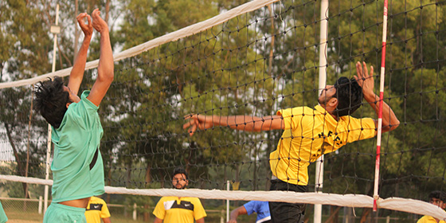
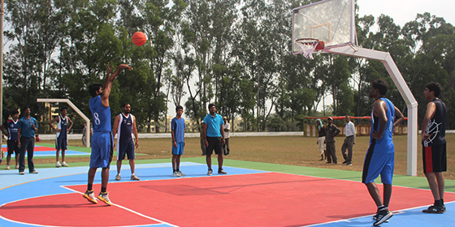
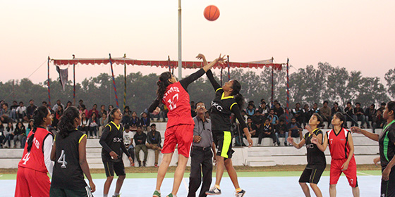
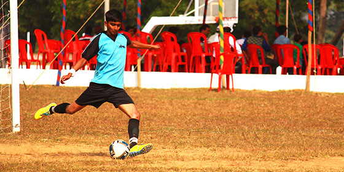
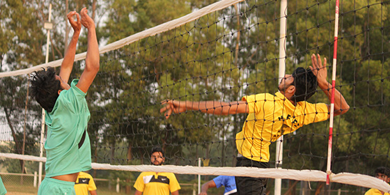
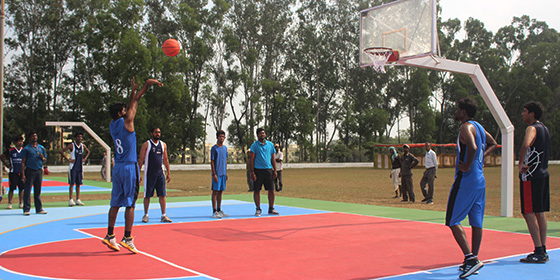
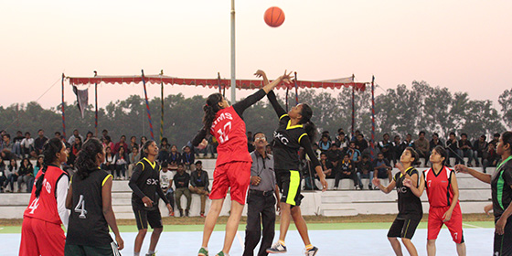
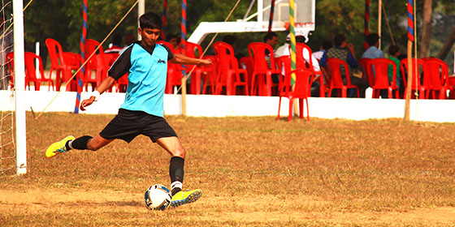

Birla Institute of Technology, Mesra, has always held sportsmanship in high regard. To make sure that its students are actively involved in sporting activities, the institute has placed a plethora of resources at their disposal. It was hence that we, the students of BIT, were tempted to take the inspiration and turn it into a signature- a fest that would underline the passion of sports that exists within all of us.
'Vajra', in essence, symbolises a thunderbolt or a mythical weapon, especially one weilded by God Indra. It patronises an uproar of strength and athleticism, all that underlines the true characteristics of sportsmanship.
The main objective of the fest is to bring together like-minded sportspersons from across the nation and give them a platform to compete on a stage of non-bias.
About Us
Birla Institute of Technology, Mesra, has always held sportsmanship in high regard. To make sure that its students are actively involved in sporting activities, the institute has placed a plethora of resources at their disposal. It was hence that we, the students of BIT, were tempted to take the inspiration and turn it into a signature- a fest that would underline the passion of sports that exists within all of us.
'Vajra', in esseence, symbolises a thunderbolt or a mythical weapon, especially one weilded by God Indra. It patronises an uproar of strength and athleticism, all that underlines the true characteristics of sportsmanship.
The main objective of the fest is to bring together like-minded sportspersons from across the nation and give them a platform to compete on a stage of non-bias.
Vajra 2017 brochure
 






